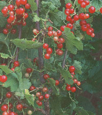
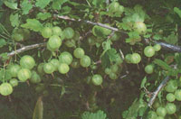
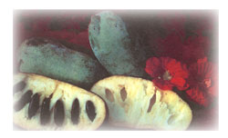
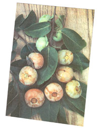
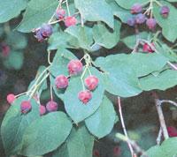

Garden and Yard Special
Fruit: rich, bloom dusted, melting, and luscious- such are the treasures of orchard and garden..." wrote A. J. Downing over a hundred years ago in The Fruit and Fruit Trees of North America . When you raise your own fruit, not only can you harvest at the peak of perfection, but you also can grow fruits not commonly found in the markets. Persimmon, pawpaw, june berry, gooseberry, and red currant are examples of uncommon, yet delectable fruits. They also are easy to grow, requiring neither the repeated spraying nor the skillful pruning demanded by apples, peaches, and other familiar fruits.
Persimmon. The botanical name Diospyros appropriately translates as "food of the gods." Persimmons have a soft, smooth, jelly-like texture, a honey-like sweetness. In appearance, the fruits resemble tomatoes, cherry tomatoes in the case of our native American persimmon and large tomatoes in the case of the oriental persimmon. American persimmon fruits are slightly drier and richer in flavor than those of the oriental persimmon, the persimmon sometimes found in markets. American persimmon trees also survive and ripen their fruits further north. American persimmon is hardy to -25°F; oriental persimmon to 0°F.
Persimmons are not widely known or grown for their fruits because they are too soft for commercial shipping-not a problem when you stand under your own tree and eat the fruits-and because unripe fruits are astringent: but who would eat an unripe peach?. Contrary to myth, frost is not necessary to ripen a persimmon, just a sufficiently long season. I garden near the northern limit of persimmon growing, so I grow an early ripening variety of American persimmon, such as Meader, Pieper, and Szukis.
Many oriental persimmons do not need cross-pollination; most American persimmons do. Trees of both types usually have either male or female flowers, so if pollination is needed, you must plant both a male and a female tree. There is no danger of spring frost snuffing out the crop, because the blossoms open relatively late in the season.
A long taproot makes persim mons more dif ficult to transplant than most other fruit trees. Therefore, plant in spring and use either potted trees or bare root trees that have been freshly dug.
Young persimmon trees grow fast, then settle down to a moderate growth rate as fruiting begins, eventually reaching a height of about fifty feet. Young trees need training so each main branch has sufficient space to develop, but once bearing has commenced, the trees naturally drop some branches that have fruited, so are somewhat self-pruning. (In the March, 1982 issue of MOTHER, we reported that planting wild mint around our persimmon trees was an unexpected companion-planting discov ery. Pests seemed to head for the high road once the mint was established around the base. Our only dilemma was, and is, keeping the mint from taking over the surrounding area once we planted it. It's a ferocious spreader, but a ring of rocks at the desired boundary seems to do the trick.)
P awpaw. I like to tell people that I have banana trees growing in my backyard, even though winter temperatures plummet to -30°F here. The trees are actually pawpaws, but they have been known as Hoosier or Michigan bananas-the tree is native to most of eastern U.S.-because the fruits have a taste and texture somewhat like a banana, with additional flavor hints of vanilla custard, pineapple, and mango. The fruits ripen in late summer or early fall.
Like persimmon, pawpaw has a long taproot, and must be transplanted similarly. Plant two pawpaws, because the lurid, purple flowers need cross pollination in order to set fruit. The trees need little pruning, only enough to remove dead or interfering branches and to stimulate some new growth each year.
Gooseberry and Red Currant. These are fruits that Europeans rave about, but which are practically unknown in America. This is not surprising since mostly inferior gooseberry varieties are sold here, and the fruits usually are picked unripe for cooking.
But pop a fresh, ripe Whitesmith, Hinnonmakis Yellow, or Achilles gooseberry into your mouth and you will taste why the best gooseberries have been compared to the best grapes in flavor. In seventeenth-century England, gooseberries were even raised commercially for fermenting into wine. Among the varieties in my garden are gooseberries that are green, white, yellow, red, and purple, with some fruits as large as small plums.
Red currants are known mostly for the beautiful jelly they make, but I let mine hang on the bushes until they are dead ripe and then eat them right out in the garden. The fresh flavor is admittedly sprightly, but this is welcome during the hot summer days during which currants ripen.
Red currants and gooseberries are borne on bushes growing three feet high and wide. These are plants of the north: they thrive where winter cold drops to -40°F but languish in the hot summers of the South. For best production, gooseberry and red currant bushes need annual pruning. Each winter, I cut away at their bases any branches older than four years old and all but a half-dozen or so of the newest shoots growing up from ground level. One shortcoming of the gooseberry is its stout thorns, which necessitate picking fruits with at least one hand gloved.
Juneberry. These fruits are blueberry-sized and dark blue, so comparisons with blueberries seem unavoidable. In fact, juneberries are juicy and sweet, with their own distinctive flavor that is a bit almondy.
Also in contrast to blueberries, juneberries are not at C4 all finicky about soil and will I grow where winter lows dip even to -40°f . There are many edible species of juneber ry, so you can grow a plant the size of a low shrub, a large shrub, or a small tree. Bus Bushy juneberries benefit from annual winter pruning, but regular pruning is not re quired for the tree forms. Unfortunately juneberries are as popular with the birds as blueberries. Guess what month the fruits ripen?
Hardy Kiwi. This fruit has the same sparkling, emerald flesh as market kiwis (a relative), and the same flavor-a savory mix of acidity and sweetness akin to a dead-ripe pineapple. But hardy kiwis are the size of grapes and have tender, smooth. It green skins and so can be eaten whole, just like grapes. As implied by the name, hardy kiwis laugh off cold, down to -30°F; market kiwis tolerate only 0°. Fruits ripen in late summer and early fall.
The plant is a vigorous twining vine that needs a pergola or trellis over which to clamber. Allow 150 square feet per plant. Prune the plants each year as you would grapes. A more casual approach to pruning, with some sacrifice in production, is to just lop back unruly branches.
Plants are either male or female, so to get fruit from a female vine, you must also plant a male vine. This one male can pollinate up to eight females. Some varieties such as Issai do not need pollination. Young plants are less cold-tolerant than mature plants, and sometimes are nipped back to the ground unless protected with a wrapping of burlap or straw.
Although persimmon, pawpaw, juneberry, gooseberry, and red currant hail from the four corners of the world, none is especially finicky as to site. The only condition all these plants ador is waterlogged soil. Otherwise, any reasonably fertile soil in full sun or even part shade will do. Since these plants also are native to woodlands or cold climates, they all also enjoy the cool, moist soil beneath a thick mulch of leaves or straw.
Many "uncommon" fruits are overlooked because they are borne on ornamental trees, shrubs, and vines. Most varieties of juneberry, for example, have been chosen for their white or pink tinged flowers, or the fiery autumn show of their leaves.
Hardy kiwis are attractive plants that have clothed pergolas (see "MOTHER' Rustic Pergola" on page 62) on old estates since the turn of the century-how many visitors have passed beneath these pergolas, unaware of the delicious fruits hidden among the leaves? Persimmons and pawpaws have drooping leaves that give the trees a soft, languid appearance in summer, livened in fall as the leaves turn a clear yellow color. Even the bark of persimmon has a pretty checked pattern.
Other plants with ornamental qualities and tasty fruits include: cornelian cherry, a small tree clothed with yellow blossoms in early spring; maypop, an herbaceous vine with large, intricate, breathtaking flowers; lowbush blueberry, a ground hugging shrub with nodding white blossoms in spring, leaves that turn crimson in autumn, and stems that remain reddish through winter.
|
 Juicy and sweet, the juneberry will happily grow even where winter temperatures dip to -40?F |
 |
 |
|
 |
 |
|